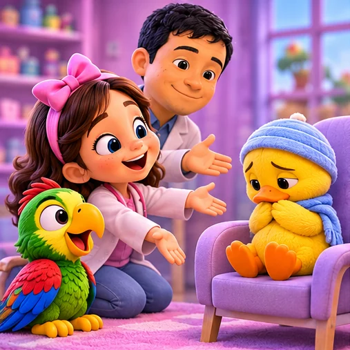
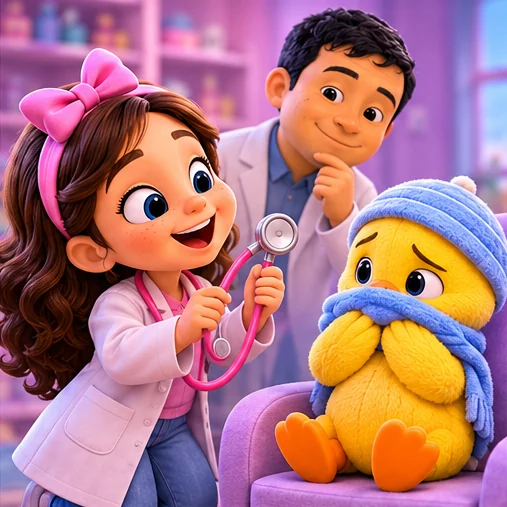
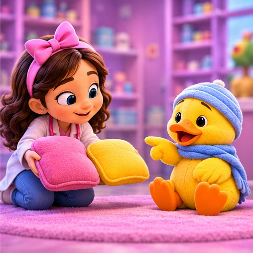
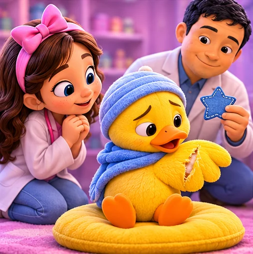
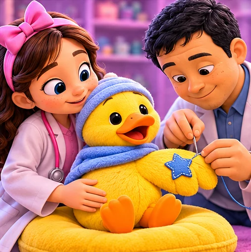
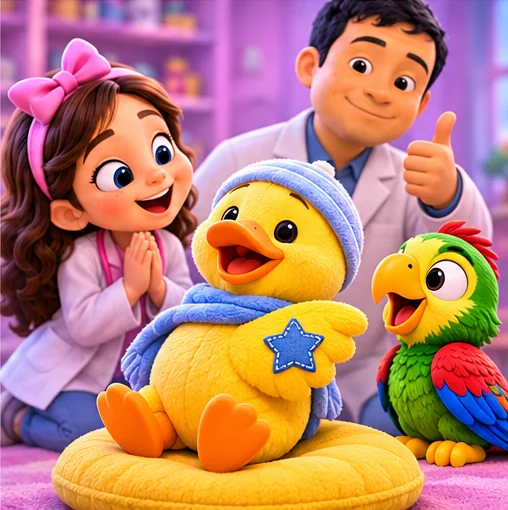

El sábado, Marie volvió a abrir su clínica de juguetes. Se puso la bata blanca y le entregó a papá una libreta para anotar los turnos.
—¿Quién sigue, asistente? —preguntó.
En la sala de espera, el señor Pato de peluche se acurrucaba en su bufanda azul. A su lado estaba el loro Pepe, que lo había acompañado a la consulta.
—Hoy le toca al señor Pato —dijo papá, moviendo apenas las alas del juguete.

Marie se acercó con su estetoscopio de juguete.
—¿Te duele la barriga? ¿Te duele una pata? ¿Te duele todo?
Papá movió al pato, que escondió el pico detrás de la bufanda.
—Doctora, creo que el señor Pato necesita tiempo para contestar —dijo papá.
Marie dejó el estetoscopio sobre la mesa. Se dio cuenta de que había hecho tres preguntas sin esperar la primera respuesta.

Marie y papá se sentaron en el suelo, a la altura del señor Pato. Marie le mostró dos cojines.
—Puedes quedarte aquí conmigo. ¿Cuál prefieres, el rosado o el amarillo?
Papá hizo que el pato estirara un ala hacia el amarillo.
—Buena elección. Ese tiene forma de pan tostado —dijo Marie.
—¡Pan tostado, pan tostado! —repitió papá con la voz de Pepe. Hasta el pato pareció sonreír.

Desde su cojín, el señor Pato se apartó la bufanda y levantó un ala. Tenía una costura abierta y por ahí asomaba un poquito de relleno.
—Ah, era el ala —dijo Marie—. Gracias por mostrármela.
Papá trajo un parche de tela azul con forma de estrella.
—Podemos coserlo aquí. ¿Te gustaría? —preguntó Marie.
El señor Pato, con un poquito de ayuda de papá, asintió.

Papá cosió el parche y Marie le sostuvo la otra ala al señor Pato. Cada vez que papá daba una puntada, Marie le contaba al pato algo que veía por la ventana.
—Un gorrión. Una nube que parece un zapato. ¡Y otra nube que parece el otro zapato!
Cuando acabaron, papá cortó el hilo y guardó la aguja en su costurero.
—Listo —dijo Marie—. ¿Quieres ver tu ala?

El señor Pato se miró al espejo. Abrió el ala despacito y luego se volvió para mostrarle a Pepe su estrella azul.
—¡Qué bonita! ¡Qué bonita! ¿También ponen estrellas a los loros? —preguntó papá con su mejor voz de Pepe.
—Solo cuando hace falta —contestó Marie, riendo.
Antes de cerrar la clínica, Marie le dictó a papá una nota para la libreta.
—Cuando un paciente esté nervioso, podemos sentarnos con él y esperar.
Papá escribió la nota y dibujó una estrella al lado.
Escuchar también es saber esperar. Cuando damos tiempo y hacemos espacio para los demás, les ayudamos a contar lo que necesitan.